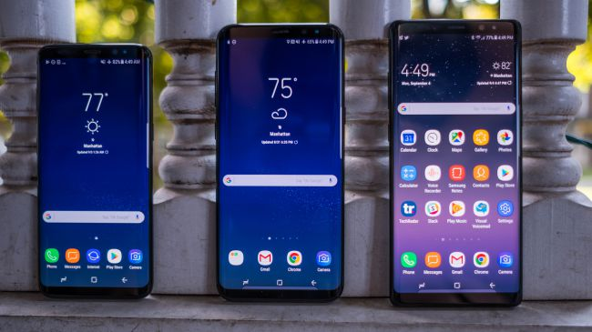
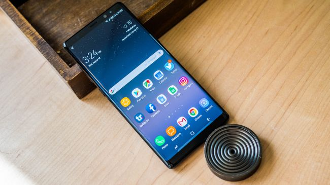
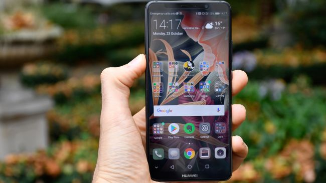
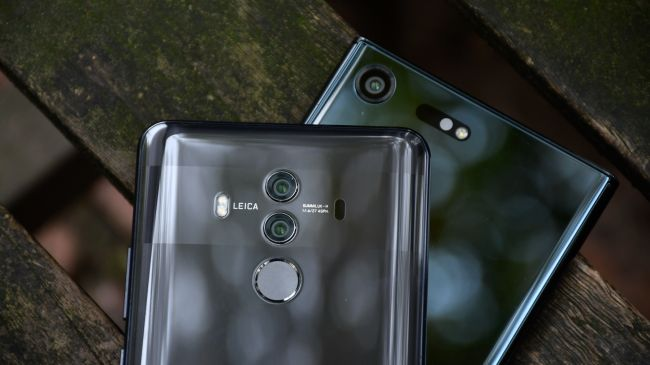

Apple iPhone X Review
Apple’s 10th anniversary iPhone X sets a new gold standard for the next decade of iPhones.

by John Chapman
Coming hot on the heels of the iPhone 8 and iPhone 8 Plus, the iPhone X steals the show despite sharing nearly identical internal hardware. The X (pronounced “ten”) is a beautiful, modern sculpture, and iPhone owners finally have a reason to show off their phones again.
Turn on the iPhone X, and it’s easy to forget almost every other phone released this year. Apple’s following the “bezel-less” smartphone design trend, where the edges around the screen melt away to offer an immersive all-screen experience. Technically, other phones may have slightly smaller bezels, but we like the approach Apple took here.
Most of the time, anyway. The notch cut out of the screen to accommodate the front-facing camera can be a little distracting. We prefer the notch on the Essential Phone, which is just a tiny black dot compared to the iPhone’s wide black stripe. iOS gracefully splits the top status bar in half around the notch, and many native apps also tailor their designs to it, but it’s easy to feel a break in immersion when watching YouTube videos and movies on Netflix. Right now, not all apps support the full display. Apps like Snapchat, Google Calendar, and Google Docs have giant black bars on the top and bottom that make the iPhone X look like an iPhone 8. Apple said all the major social media networks support the unusual screen, and it said many developers are in the process of submitting updated versions of their apps. We saw Slack, for example, adding support yesterday. You’ll likely see apps with black borders around them for a few more weeks as developers continue to issue updates.
The OLED display goes a long way in making amends for these quibbles. The 5.8-inch screen has a 2,436 x 1,125-pixel resolution (458 pixels per inch), and it’s razor sharp. Colors are vibrant, blacks are finally as pitch-dark as many other OLED Android phones, and it was easy to read in direct sunlight. You’ll have a hard time pulling your eyes away from this screen.
As on the iPhone 8 and iPad, Apple’s True Tone technology detects the lighting condition you’re in, and adjusts the screen’s tint to make it more readable. It works extremely well, and made the screen warmer — and easier on the eyes — in our harsh office lighting. The phone’s all-glass rear is almost the same as the iPhone 8 Plus, except the dual-camera setup has turned to a vertical orientation. Apple says the front-facing depth sensors and cameras took up a lot of space up top, and the rear camera wouldn’t fit sideways. With only the Apple and iPhone logo printed on the glass, the back looks minimal and sleek. The vertical orientation is a dead giveaway you have the iPhone X, as it’s a pretty unusual camera orientation and placement on a phone.
One noticeable difference is the power button, which now perhaps should be called the “lock button.” Still situated on the right edge, it’s more elongated than before, which makes it easier to find and press. We say lock button because to turn off the iPhone X, you need to press the lock button and the volume up or down buttons. Tapping on the lock button just wakes or turns off your screen, but you can double tap it to activate Apple Pay, or press and hold it to launch Siri. The mute switch is on the top left, and the volume rocker sits below. There’s still no headphone jack, and the only port is for your Lightning cable at the bottom edge, between the bottom-firing speakers. For music, you’ll either have to pair wireless earbuds with the Bluetooth 5 technology on board, or you can embrace the dongle life with the included Lightning to 3.5mm headphone jack adapter. What we like most about the iPhone X is its size. It feels compact — it’s slightly larger than the 4.7-inch iPhone 8, but it has a bigger screen than the 5,5-inch iPhone 8 Plus. The X is comfortable in the hand, and it feels remarkable to have so much more screen real estate than a cumbersome “plus-sized” phone.
Samsung Galaxy Note 8 Review
The Note 8 is big in every way imaginable.
by Alan Greenberg
The Galaxy Note 8 is the biggest reimagining of Samsung’s best smartphones for productivity, and more than enough to right the major wrongs of the recalled Note 7. This is a mega-sized mea culpa. We've tested the Note 8 for more than a more and it has us convinced: this is a true redesign of not just the Note series, but of the average smartphone from top-to-bottom, edge-to-edge, and rear camera to, well, rear camera. There are now two cameras on the back, a first for a Samsung flagship smartphone. It takes brilliant portrait photos, and you can even edit the depth of field post-capture. The S Pen stylus returns, and it has a larger 6.3-inch ‘Infinity Display’ to work with – but one that doesn’t increase the dimensions of the actual phone too much. The Note 8 acts like a big, borderless glass canvas for your important handwritten notes and masterpiece doodles.
Why buy this instead of the 6.2-inch Galaxy S8 Plus? The extra tenth of an inch is insignificant and doesn’t matter, but Note fans adore the S Pen functionality and its more square shape, power users are going to benefit from the 6GB of RAM, and we loved the superior dual-lens camera in our tests – you will too. This is the most powerful Samsung phone yet. It does, however, cost you in three ways. It’s too big for some – it’s technically Samsung’s best, but not the best for everyone. You’re going to need a Note 8 case to confidently hold this unwieldy glass beast, and two hands to operate it. The big screen also comes at the cost of the Note’s usual oval-shaped fingerprint sensor home button. It’s gone. The on-screen button that replaces it works fine, but the fingerprint sensor is now located on the back of the device and off-center – it’s a textbook flawed design, and the alternative iris scanner doesn’t always work when you want to unlock the phone.
Then there’s the Note 8 price. If you want top-of-the-line specs, the one of the most advanced cameras, a stunning display, and streamlined multitasking on a phone, you’re really going to pay for them. The Note 8 costs more than the S8 Plus, although if you’re going to sink a lot of money into a device that you use everyday, you may as well go all the way. Can your wallet, and the extent of your grip, handle the Note 8? That’s pretty much all that you – if you have faith in Samsung again – need to ask yourself before buying this phone. The new Google Pixel 2 and Pixel 2 XL are the biggest Samsung Galaxy Note 8 rivals. They already run Android Oreo and Google's camera is slightly better but its screen colors are worse, in our opinion. The Google Pixel 2 XL is having a few screen burn-in problems, too. Apple has the all-new iPhone X launching on November 3 with a borderless display, facial recognition and an equally sizable price tag, but that requires switching over from Android to iOS 11.
Huawei Mate 10 Pro Review
Huawei's Best Phone Yet.
by Christina Miller
The Huawei Mate 10 Pro has a lot going for it. In addition to a slick, premium design, the screen packs vibrant, OLED technology with an 18:9 aspect ratio - similar to that found on the Google Pixel 2 XL and iPhone X. Huawei’s Mate 10 Pro also has a dual camera set-up reminiscent of the excellent iPhone 8 Plus and Galaxy Note 8. It’s even loaded up with Android 8, the latest version of Google’s operating system, out of the box, meaning you get the operating system’s latest security features and UI highlights - such as picture-in-picture viewing.
When its specs are laid out alongside the rest of the flagship competition, the Huawei Mate 10 Pro even wins out in some key areas. For starters, it offers more storage - 128GB as standard vs 64GB on other flagships. It also has a beefier battery than the competition - a huge 4,000mAh, compared with, 3,300mAh in the Samsung Galaxy Note 8 and under 2,691mAh in the iPhone 8 Plus. The Mate 10 Pro even has an IR blaster for some added nostalgia-factor, meaning it can double up as a TV remote control for those times you’re trying to spook your mates in the pub, or simply can’t find your own. Even on paper though, this phone isn’t perfect. The screen isn't the sharpest at 1,080 x 2,160, putting it below the crystal clear 2K and even 4K displays on competing smartphones like the Sony Xperia XZ Premium.
It also has no headphone jack, or microSD card slot - so you’ll need to use a dongle for your wired headphones and guarantee the ample internal storage is enough to last you the entire life-cycle of the phone. Thus far, the Huawei Mate series has always felt like the more niche, phablet series in the shadows of the Huawei P10 and Huawei P10 Plus, but the Mate 10 Pro looks set to change that. Due to launch in the UK on Three, and in Australia as well as a number of other major markets, but seemingly not the US, Huawei will be hoping it can finally mainstream its Mates, rather than giving us another excellent, but cumbersome and hard to find smartphone like the Mate 9 before it.